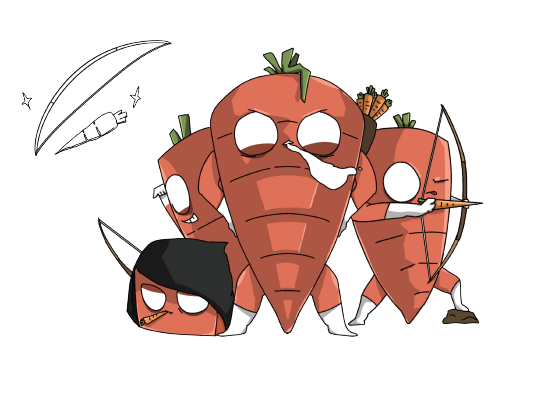
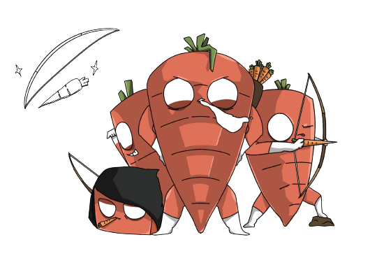

咖BOM！！
A05 動畫短片
你吃咖哩是哪一派？ 一點點攪拌都不行？ 還是拌好拌滿派？
愛情VS用餐習慣，哪一邊勝出？ 當充滿強迫症的男主角， 對女主角一見鍾情， 見了面才發現兩人個性是大大的不同！誰又想得到，竟掀起一場大戰？！
請注意，戰爭即將開始！ 你是哪一派的？快加入陣營 捍衛自己的咖哩自由！
Which curry faction are you in? The "no stirring at all" faction? Or the "mix it all up" faction?Love vs. dining habits, which side will win? When the male lead, who is full of OCD, falls in love at first sight with the female lead, he only realizes after meeting her that their personalities are vastly different!Who could have imagined that this would lead to a major battle?!Please note, the war is about to begin! Which faction are you in? Join the ranks and defend your curry freedom!
組員 Members
高雅琪
吳明祺
凃珮瑜
吳憶芬
賴泰安
陳麒安
陳俞蓁
指導老師 Supervisor
陳鴻源
林孟欣
 
